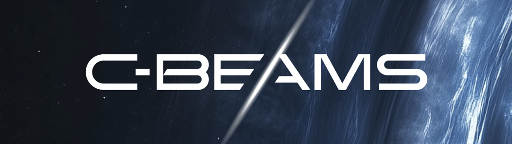

C-Beams
I have been working with Distant Light Games since April 2024.
During my time on the project I have developed the newtonian physics movement system for the game.
More information will come as soon as I can share it publically, but for the moment I'm working on the resource mining aspect of the game.